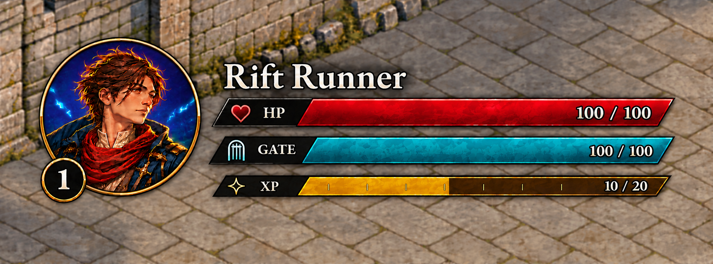
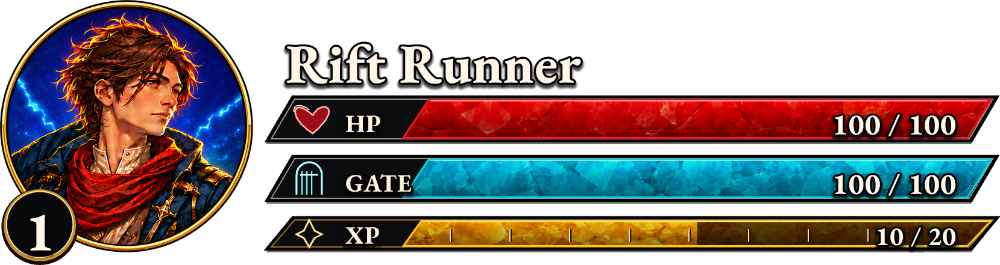
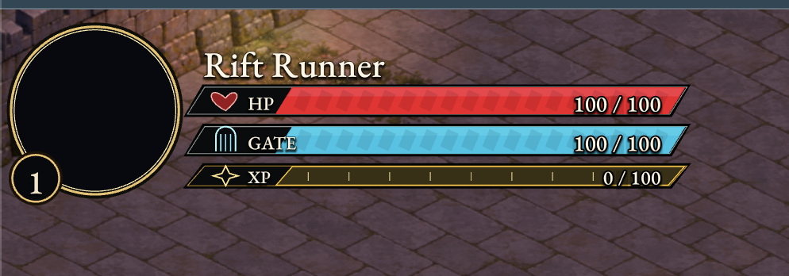

Player Portrait and Status Bars
Production console rebuilt from the supplied reference. Circular painted portraits, gold level badge, bold ivory serif text, and separate slanted red HP, cyan GATE, and gold XP meters. All labels and values remain live.
Requested reference

Rendered console — HP 100 / 100, GATE 100 / 100, XP 10 / 20

Game verification
Generated production assets
Raster assets generated with the built-in image generator and packaged at 1×, 2×, and 3×. Meter materials are revealed by masks without stretching their texture.
Reported earlier result
This earlier version used simple vector inlays, a lighter font, and an opaque layer that could hide the portrait.

Local verification report · Live verification report